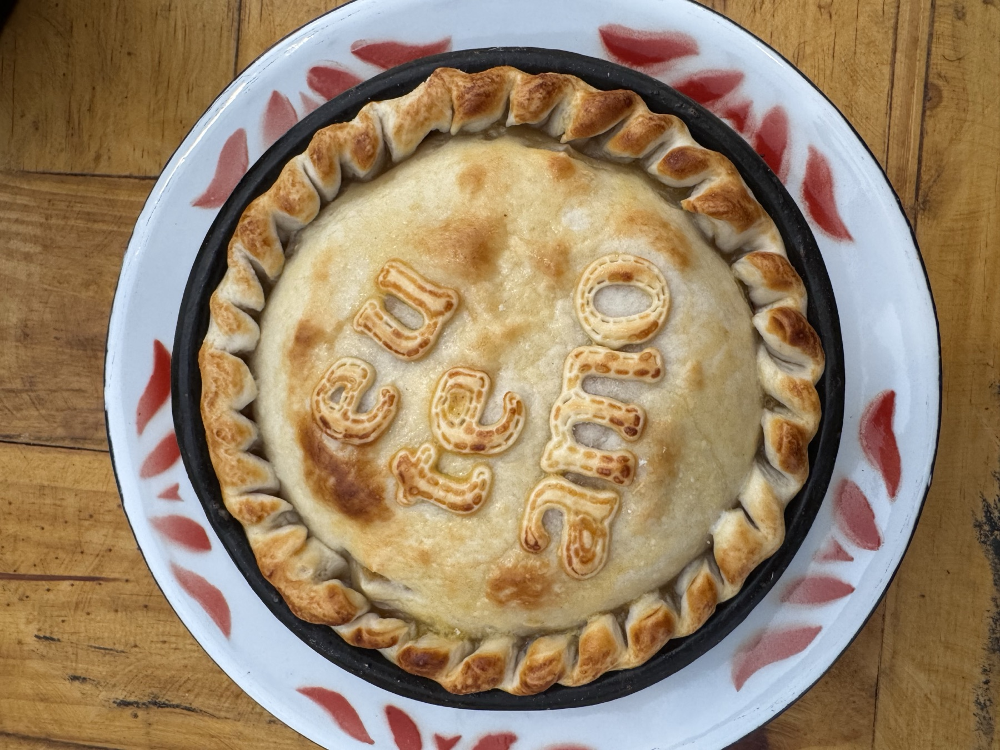
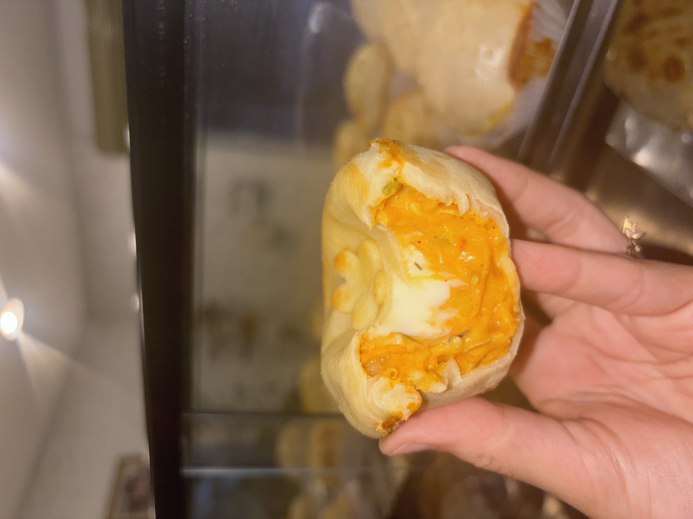
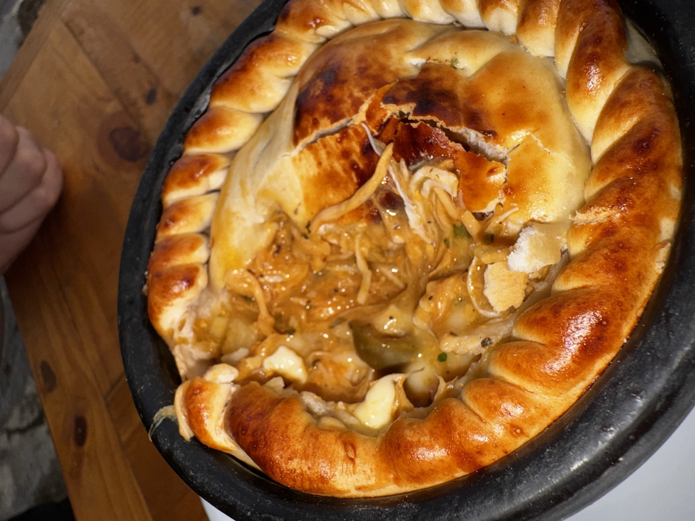
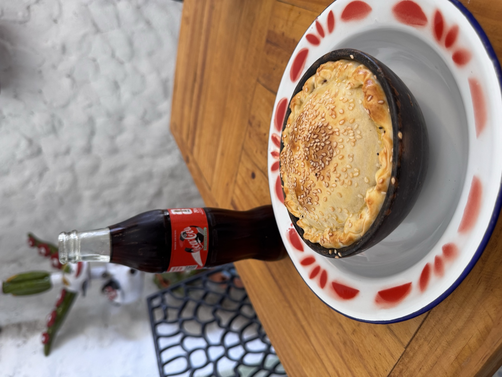
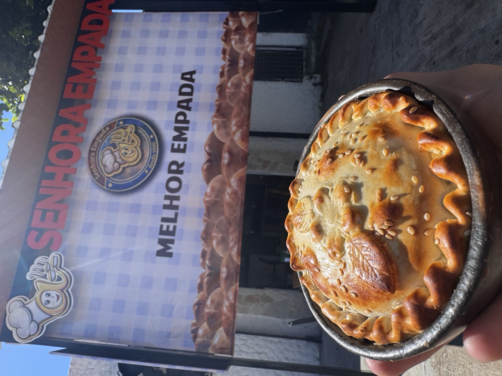
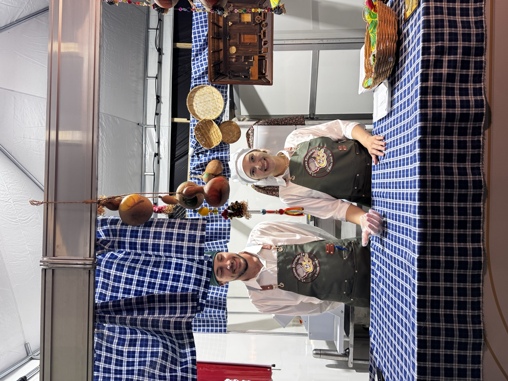

O empadão goiano de família, feito à mão.
Massa que desmancha, recheio farto e a borda dobrada à mão do jeito que o pai da Izadora ensinou. Hoje nas nossas lojas, nas encomendas e no curso em vídeo.


Aprenda o empadão da Senhora Empada na sua cozinha.
A Izadora abre a cozinha e mostra a montagem do empadão, da massa ao forno, com a dobradura da borda em câmera lenta.
- Aula em vídeo com legendas
- Dobradura em câmera lenta
- Apostila em PDF com checklist
- Garantia de 7 dias pela Kiwify
R$ 79,90pagamento único
Feito todo dia, do jeito de sempre.






Uma receita que passou de pai para filha.
A receita veio do pai da Izadora. Quando ele se foi, ela assumiu a cozinha e levou o sabor da família para as lojas.
Hoje a Senhora Empada faz empadas, empadões e salgados para o balcão, para encomendas e para eventos, e ensina quem quer aprender.
Aulas presenciais na nossa cozinha.
Turmas pequenas, com a mão na massa: produção de comida e artes plásticas.


Empadas para o seu evento
Festas, empresas e feiras: a gente leva o balcão da Senhora Empada.
Pedir orçamentoO que está acontecendo na cozinha.
Venha provar em Goiânia.
Retire na loja ou peça o seu Uber. Encomendas pelo WhatsApp, com pagamento antes da produção.


Empada quentinha ou a receita na sua mão.
Encomende pelo WhatsApp ou aprenda a fazer com o curso da Izadora.